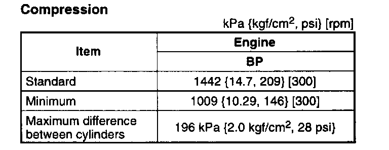

Compression Check: Testing and Inspection
COMPRESSION INSPECTIONWarning:
^ When the engine and the oil are hot, they can badly burn. Be careful not to burn yourself during removal/installation of each component.
1. Verify that the battery is fully charged. Charge it again as necessary.
2. Warm up the engine to the normal operating temperature.
3. Stop the engine and allow it to cool off for about 10 minutes.
4. Perform "Fuel Line Safety Procedure".Refer to Powertrain Management. Leave the fuel pump relay removed.
5. Remove the spark plugs.
6. Disconnect the ignition coil connector.
7. Connect a compression gauge into the No. 1 spark plug hole.
8. Fully depress the accelerator pedal and crank the engine.
9. Record the maximum gauge reading.
10. Inspect each cylinder as above.

11. If the compression in one or more cylinders is low or the compression difference between cylinders exceeds the maximum, pour a small amount of clean engine oil into the cylinder and inspect the compression again.
1. If the compression increases, the piston, the piston rings, or cylinder wall may be worn and overhaul is required.
2. If the compression stays low, a valve may be stuck or improperly seated and overhaul is required.
3. If the compression in adjacent cylinders stays low, the cylinder head gasket may be damaged or the cylinder head is distorted and overhaul is required.
12. Disconnect the compression gauge.
13. Connect the ignition coil connector.
14. Install the fuel pump relay.
15. Install the spark plugs.